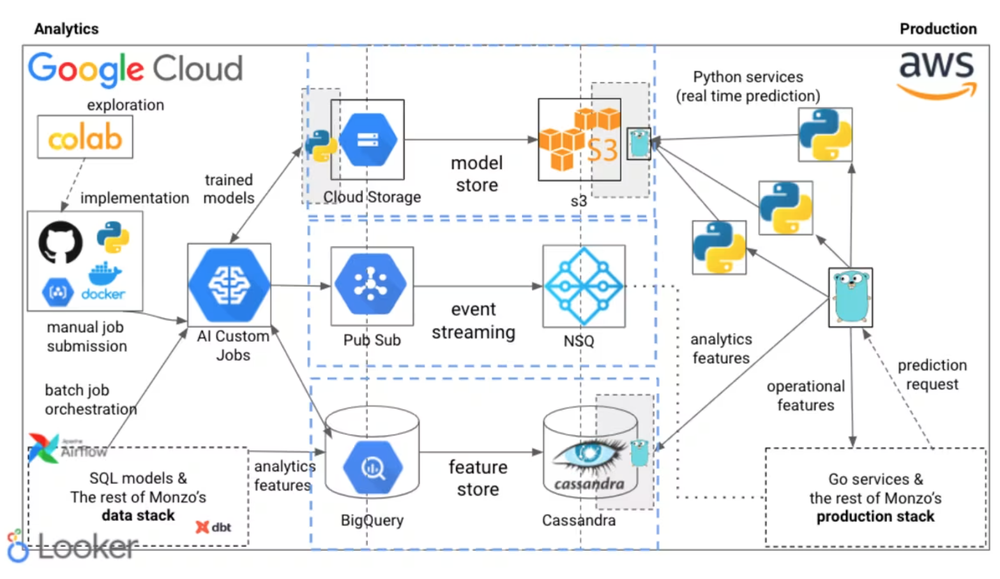

Monzo ML Stack¶
Platform
Introduction
ML at Monzo: Used across various banking areas, including financial crime prevention and customer service optimization.
Focus of Post: Monzo’s ML platform and tools, refined over several years to enable fast and safe development.
Our early principles
Autonomy: Empower ML practitioners to work end-to-end, including deploying their own models to production, without handover to backend engineers. Goal: Speed up development and encourage end-use consideration during design.
Flexibility: Avoid constraining to specific frameworks or ML types, allowing practitioners to pick the “right tool for the job” for diverse problems and data.
Reuse over rebuild: Leverage Monzo’s existing strong microservice production stack (Go-based) and evolving data stack, rather than building an isolated ML stack. Focus efforts on the “delta.”
Monzo’s machine learning stack (Overview)
The stack aims to support the entire ML lifecycle from prototyping to production deployment and monitoring, catering to various use cases.
Integrates with both the data stack (GCP) and production stack (AWS).
We use Notebooks for prototyping
Tool: Google Colab notebooks.
Purpose: Rapid exploration, prototyping, and gauging idea viability (similar to whiteboarding for engineers). Requires data access.
Scope Limitation: Explicitly not used beyond initial exploration; mature ideas are moved into the codebase.
We have a monorepo of Python jobs, libraries and command line tools
Core Tasks: Dataset preparation and model training are split into two separate jobs.
Decoupling Benefit: Allows experimentation with model training without altering dataset creation logic.
Workflow:
All jobs are Python-based, committed and peer-reviewed in a shared GitHub monorepo.
Created using a base
cookiecuttertemplate.
Dataset Creation Jobs:
Orchestrate BigQuery SQL queries to create training data.
Feature Engineering: Majority implemented in SQL to reuse existing data warehouse features.
Output: Versioned snapshot of data exported to Google Cloud Storage (GCS).
Model Training Jobs:
Run as custom containers on Google Cloud AI Platform.
Start by downloading data snapshot from GCS.
End by uploading trained model to model registry.
Flexibility: Allows choice of instance type (e.g., GPUs for deep learning) and job parameterization.
Orchestration:
Makefilecommands used to create and submit jobs to AI Platform.
Monorepo Extras:
Libraries with shared functionality (e.g., saving models to registry).
Shared scripts for building/pushing containers to Google Container Registry (GCR) and submitting jobs to AI Platform.
Our model registry is the home of all our trained models
Purpose: Single, centralized location for all trained ML models at Monzo.
Key Functions:
Retrieval: Models can be fetched for inference in both the data stack (GCP) and production stack (AWS).
State Management: Controls model state during validation (uses shadow mode deployments extensively).
Metadata Capture: Records data about trained models.
Evolution: Has undergone significant iteration.
Batch prediction jobs are orchestrated in our data stack
Use Case: Scheduled predictions (e.g., daily, weekly).
Principle Applied: “Reuse over rebuild” – runs within the existing data stack.
Workflow:
Data Transformation:
dbt modelsused to prepare input for the batch prediction job.Prediction Job: Python job pulls data, loads model, generates predictions.
Orchestration:
dbt modelsand Python job orchestrated together using Airflow (managed by Data Platform Engineering team). Job submitted to AI Platform after dbt models complete.
Output Handling:
Predictions published as events to Google Pub/Sub.
Allows consumers to trigger actions (e.g., inserting back to BigQuery, triggering customer account actions).
A consumer in the production stack republishes events onto NSQ for backend service consumption and injection back into the data warehouse.
Real time inference is deployed alongside the rest of the bank
Use Case: Models requiring real-time predictions (e.g., fraud classifiers run on every transaction).
Production Stack Context: Monzo’s production stack is largely Go, using Cassandra.
Serving Components:
Deployments:
Introduced Python microservices into the production stack.
Kept intentionally lightweight (often just loading model and serving predictions via handlers).
Heavy lifting delegated to Go services.
Generated from a template, integrated with standard deployment tooling (aim for parity with Go service deployment).
Models:
Built a model registry in production.
API allows Python services to request specific models.
Supports automatic reloading of new models in Python services.
Flexibility Demonstrated: Shipped scikit-learn, XGBoost, LightGBM, PyTorch, transformers, skorch, and Gensim models.
Features (Inputs to Models):
Operational Features: Computed in real-time.
Consumed from NSQ event streams.
OR via RPC requests to other services on demand (e.g., real-time text embeddings, fraud features).
Analytics Features:
Computed on a schedule in the data warehouse (BigQuery).
Transferred from BigQuery into Cassandra for low-latency on-demand retrieval in production.
Don’t need millisecond accuracy but provide high value (e.g., multi-month aggregations).
Machine learning systems are monitored with the same tools we use to analyse our systems and products
Principle Applied: “Reuse over rebuild” – adopted company-wide tools for accessibility.
Monitoring Types:
System Monitoring: Service health (requests, timing, memory/CPU).
Tool: Grafana (same as backend engineers).
Feature Monitoring: Health of data ingested into the feature store from the data warehouse.
Tool: dbt-slack alert integration (built by Data Platform team) + other data validation queries (ingestion preconditions).
Model Performance Monitoring: Model impact (precision, recall, effect on company metrics like fraud rates).
Tool: Looker (same as data scientists for product dashboards).
Benefit: Easy accessibility of ML metrics alongside product metrics for stakeholders like product managers.
Reflections and future plans
Current Approach Benefit: Little to no time spent managing infrastructure.
SQL-based feature engineering leverages BigQuery’s distributed architecture, avoiding manual cluster management (e.g., for Spark).
Rarely spin up VMs manually.
Uniform approach makes it easy to switch between ML systems; upgrades benefit everyone.
Missing Pieces (Future Work):
Offline experiment tracking.
Automated builds.
Adoption & Evolution:
Platform being adopted by other data teams (e.g., Decision Science for statistical models in borrowing).
Revisiting which pieces should be part of the broader Data Platform.
Focus on making existing platform safer and easier to use.